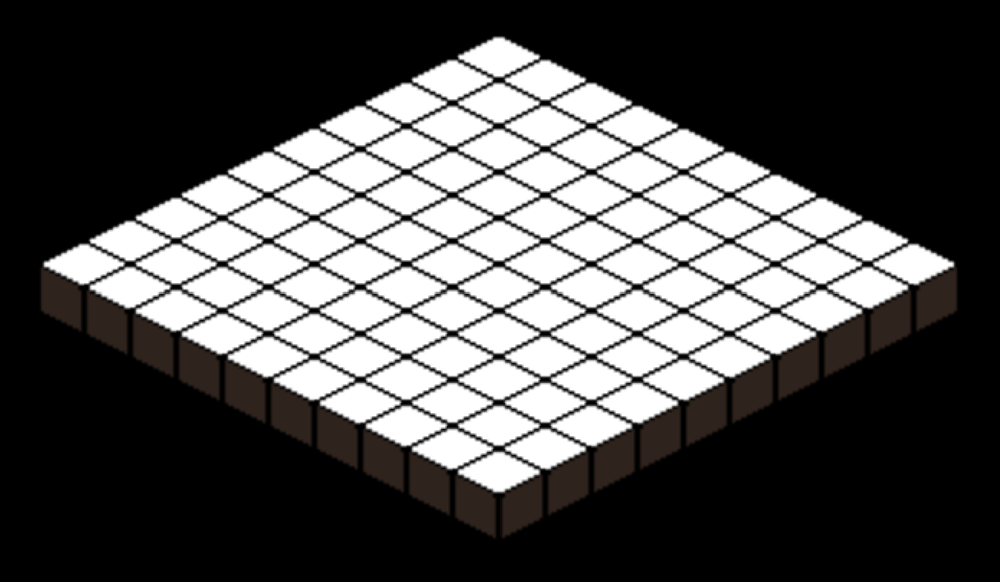
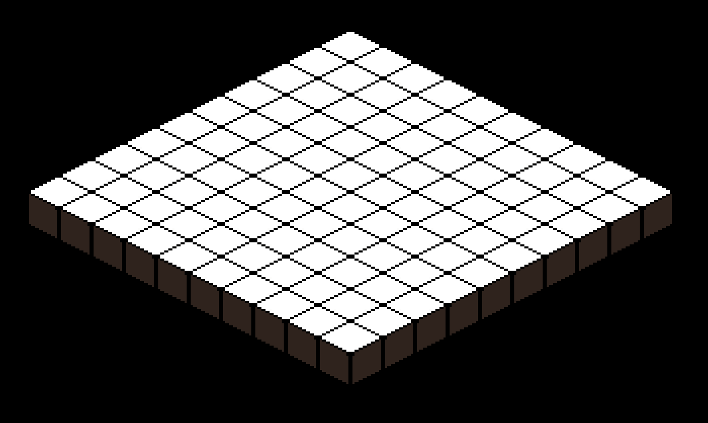

The term 'isometric' is more commonly used when referring to 2d videogames with a 3d perspective, also called 2.5d. To be technically correct, isometric projection uses 30 degree parallel angles, and it's a type of axonometric projection. I'll use the term axonometric because it's the broader term, and it means we can draw the world at any angle we want. Yes, around this blog, we strive to be professional.
We're going to use a coordinate system to draw on the screen. First, we are going to make a standard x, y grid. We can do this with a double for loop to make a table of tables. The x is our row, and contains another table, y, which contains our values.
local map = {}
function map.new(rows, columns)
local grid = {}
for x = 1, rows do
grid[x] = {}
for y = 1, columns do
grid[x][y] = {}
end
end
return grid
end
return map
Our grid, besides containing entries for values like sprite data, functions in its current state as our Cartesian coordinate system. The y axis maps to north and south, and x to east and west. The only other value we need to draw is the size of our tiles- we multiply our indexes against the size of our tiles, subtract a margin, and then we have a Cartesian map.
local viewport = {}
local tilesize = 50
local margin = 2
function viewport.draw(map)
for x = 1, #map do
for y = 1, #map[x] do
love.graphics.rectangle("fill", x * tilesize, y * tilesize, tilesize - margin, tilesize - margin)
end
end
end
return viewport
Output:
This type of map will work perfectly for many games. If we were to draw our characters from above, as if we were looking directly down to the tops of their heads, it would be called a top-down perspective. We could also draw them from the side to emulate perspective, and this would be called orthographic projection. However, to achieve our slightly more sophisticated axonometric look, we will first need to rotate our grid by 45 degrees.
We've not only shifted our x and y axes used for drawing, but we've also shifted our input by 45 degrees. If our player moves left, he is moving left and up, and if he moves down, then it is down and right. There are many ways to handle this, the least obvious but perhaps best method is to do nothing. The player will quickly adapt to the new control scheme.
The next step now is to squash our y axis by 50%. This step is what causes our brains to perceive a z axis- that is, it gives it depth.
Here is how our viewport has changed:
function viewport.draw(map)
for x = 1, #map do
for y = 1, #map[x] do
love.graphics.setColor(1,1,1,1)
local cartx, carty = x * tilesize, y * tilesize
local tileh, tilew = tilesize - margin, tilesize - margin
love.graphics.origin()
love.graphics.scale(1, 0.5)
love.graphics.rotate(0.785398)
love.graphics.translate(love.graphics.getWidth() / 2, -love.graphics.getHeight() / 4)
love.graphics.rectangle("fill", cartx, carty, tileh, tilew)
end
end
end
This code won't actually be useful for us to make a game, unless we want to draw it using primitives. Instead, we can just draw our tile sprites this way. But, since we are not rotating and squashing our drawings, we will need to find another way to rotate and squash our coordinate system. To get our new axonometric coordinates, we must make a function to convert them from Cartesian.
viewport.cart_to_axo = function (x, y)
local axox = (x - y) * (tilewidth / 2)
local axoy = (x + y) * (tileheight / 4)
return axox, axoy
end
Note that I've changed 'tilesize' to 'tilewidth' and 'tileheight'. Commonly, games with this perspective will have tiles that are twice as tall as they are wide. If your player sprite is not short and squat, it will match tile sections, and sections of walls will match up without stacking, it just helps to standardize things across drawings and calculations. In this tutorial, the height and width of the tile is equal.
Most of the time software that game artists use, such as Photoshop, Krita, Aesperite, or Hexels, will have guide grids that can be set to axonometric angles. While the standard isometric angle will call for 30 degrees, many pixel artists choose to use 26.565 degrees. This is because the pixels on the screen do not line up at 30, causing "jaggies," lines that do not appear smooth. Here is my basic 32x32 tile that can be used to draw our ground.
Let's go ahead and plug it into our code and see what it looks like:
With no offset, the upper left corner of the image is where the draw starts. The first tile being drawn is the one in the upper left corner of the screen, and since we're subtracting from the x axis, it's drawn halfway off of the edge of screen. So you will have to be aware that you will need to translate the x axis by half of the map width. It's also worth noting that this draw order is perfect for what we're doing; We don't need a separate z index for ordering our draw operations. Let's see what it looks like centered and scaled.
It looks blurry. LÖVE, by default, interpolates graphics information with a linear algorithm. This means, if you're doing pixel art, or otherwise have low resolution images, you will have a poor outcome when scaling up. The more work-intensive way to solve this problem is by drawing the art at higher resolutions, and use mipmaps to downscale. This clearly isn't a great solution, it will increase RAM usage and the total file size of your game. The better solution is to change the filtering mode. Any drawable in LÖVE has a method to change filtering to "nearest neighbor". That means when a canvas pixel is sitting in-between screen pixels, the interpolation draws another full pixel. We've made a few changes, so let's take a look at the entire viewport code.
local viewport = {}
local tilewidth = 32
local tileheight = 32
local scale = 2
local tile = love.graphics.newImage('/sprites/template_32.png')
tile:setFilter("nearest", "nearest")
function viewport.new_grid(rows, columns)
local grid = {}
for x = 1, rows do
grid[x] = {}
for y = 1, columns do
grid[x][y] = tile
end
end
return grid
end
function viewport.cart_to_axo(x, y)
local axox = (x - y) * (tilewidth / 2)
local axoy = (x + y) * (tileheight / 4)
return axox, axoy
end
local map = viewport.new_grid(10, 10)
function viewport.draw(map)
for x = 1, #map do
for y = 1, #map[x] do
love.graphics.origin()
local axox, axoy = viewport.cart_to_axo(x, y)
love.graphics.translate((tilewidth * #map) * scale / 2, 0)
love.graphics.draw(grid[x][y], axox * scale, axoy * scale, 0, scale)
end
end
end
return viewport

Okay! So it looks sharp now. We're ready to wrap it up, right? Beware Murphy's Law. We've just been looking at screenshots so far, and we haven't actually moved around.
Do you notice the flickering on the edges of the tiles, and how the lines aren't very straight? That's due to aliasing. You must do all of your drawing operations by whole numbers to get smooth movement without this flickering. If you have already written all of your code as floats, that's okay. Just make sure to use a rounding function like math.floor on the coordinates and scale when it is drawn.
I hope I've done a good job covering the basics of axonometric projection. If you have any questions, or suggestions for the article, feel free to let me know. Thanks for reading!